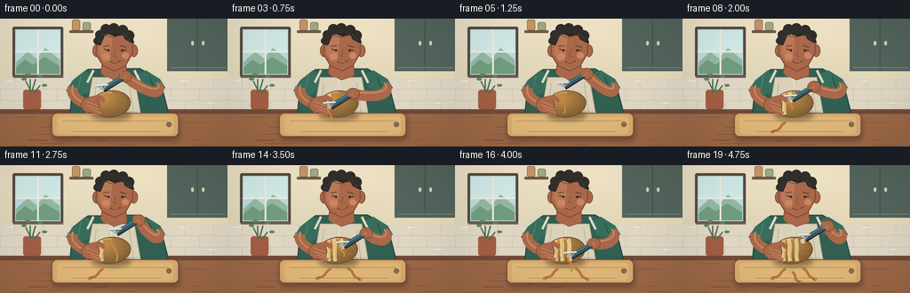
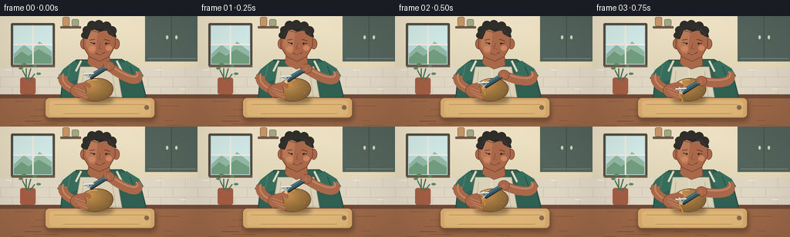

CODING AGENTS AS PIXEL WORLD MODELS
traex/GPT-5.6-Sol · motion_rationality_0022
点击播放 · 原生 RGB 像素
此结果可播放，但该运行尚未通过最终提交审核。页面展示不代表评测通过。
逐轮保存的候选
回放视频、检查图与代码变化。
每份候选均可单独播放。实际图片检查记录在下方工具轨迹中。
候选 01播放与检查图
点击播放 · 原生 RGB 像素


展开代码变化
--- 上一保存版本
+++ 本次保存版本
@@ -0,0 +1,387 @@
+from pathlib import Path
+import math
+import numpy as np
+from PIL import Image, ImageDraw, ImageFilter
+import artifact_io
+
+# Deterministic, programmatic 2-D animation rendered large then downsampled.
+W, H, S = 256, 144, 4
+RW, RH = W*S, H*S
+N = 20
+
+
+def q(v):
+ return int(round(v*S))
+
+def box(b):
+ return tuple(q(x) for x in b)
+
+def pts(p):
+ return [(q(x), q(y)) for x, y in p]
+
+def ellipse(draw, b, fill, outline=None, width=1):
+ draw.ellipse(box(b), fill=fill, outline=outline, width=q(width) if outline else 1)
+
+def rect(draw, b, fill, outline=None, width=1, radius=0):
+ if radius:
+ draw.rounded_rectangle(box(b), radius=q(radius), fill=fill, outline=outline,
+ width=q(width) if outline else 1)
+ else:
+ draw.rectangle(box(b), fill=fill, outline=outline, width=q(width) if outline else 1)
+
+def poly(draw, p, fill, outline=None, width=1):
+ draw.polygon(pts(p), fill=fill)
+ if outline:
+ draw.line(pts(p + [p[0]]), fill=outline, width=q(width), joint='curve')
+
+def line(draw, p, fill, width=1, joint='curve'):
+ draw.line(pts(p), fill=fill, width=q(width), joint=joint)
+
+def bezier(p0, p1, p2, p3, steps=30):
+ out = []
+ for i in range(steps+1):
+ t = i/steps; u = 1-t
+ out.append((u**3*p0[0]+3*u*u*t*p1[0]+3*u*t*t*p2[0]+t**3*p3[0],
+ u**3*p0[1]+3*u*u*t*p1[1]+3*u*t*t*p2[1]+t**3*p3[1]))
+ return out
+
+def thick_curve(draw, p0, p1, p2, p3, fill, width):
+ p = bezier(p0,p1,p2,p3)
+ line(draw, p, fill, width)
+ ellipse(draw, (p3[0]-width/2,p3[1]-width/2,p3[0]+width/2,p3[1]+width/2), fill)
+
+def rotated_ellipse_points(cx, cy, rx, ry, angle, count=80):
+ ca, sa = math.cos(angle), math.sin(angle)
+ return [(cx + rx*math.cos(t)*ca - ry*math.sin(t)*sa,
+ cy + rx*math.cos(t)*sa + ry*math.sin(t)*ca)
+ for t in np.linspace(0, 2*math.pi, count, endpoint=False)]
+
+def shadow(img, shape_func, blur=4, alpha=90, offset=(0,0)):
+ layer = Image.new('RGBA', (RW,RH), (0,0,0,0))
+ d = ImageDraw.Draw(layer)
+ shape_func(d, offset, alpha)
+ layer = layer.filter(ImageFilter.GaussianBlur(q(blur)))
+ img.alpha_composite(layer)
+
+
+def make_background():
+ # Warm wall gradient.
+ yy, xx = np.mgrid[0:RH, 0:RW]
+ t = yy / RH
+ base = np.zeros((RH,RW,4), dtype=np.uint8)
+ base[...,0] = np.clip(236 - 34*t + 8*(xx/RW),0,255)
+ base[...,1] = np.clip(225 - 30*t + 5*(xx/RW),0,255)
+ base[...,2] = np.clip(199 - 35*t,0,255)
+ base[...,3] = 255
+ im = Image.fromarray(base, 'RGBA')
+ d = ImageDraw.Draw(im)
+
+ # Window and bright morning sky.
+ rect(d, (14,9,71,66), '#544b40', radius=2)
+ rect(d, (17,12,68,63), '#b9d9db')
+ # sky gradient bands and soft distant forms
+ rect(d, (18,13,67,36), '#cfe7e4')
+ poly(d, [(18,49),(31,37),(41,45),(51,33),(67,46),(67,62),(18,62)], '#91b7a3')
+ poly(d, [(18,55),(28,46),(37,52),(50,43),(67,53),(67,62),(18,62)], '#719b7e')
+ line(d, [(42.5,12),(42.5,63)], '#eee8d8', 2)
+ line(d, [(17,37),(68,37)], '#eee8d8', 2)
+ line(d, [(15,65),(71,65)], '#6c5d4c', 3)
+
+ # Upper cabinets and open shelf.
+ rect(d, (188,-4,258,59), '#53645c')
+ line(d, [(222,-2),(222,58)], '#415049', 1)
+ line(d, [(192,55),(254,55)], '#78837b', 1)
+ ellipse(d, (215,25,218,30), '#d6d0b5')
+ ellipse(d, (227,25,230,30), '#d6d0b5')
+ rect(d, (78,13,105,16), '#70594a', radius=1)
+ # jars on shelf
+ rect(d, (81,1,90,13), '#c59564', '#665248', 0.6, 2)
+ rect(d, (93,4,102,13), '#9eaa82', '#665248', 0.6, 2)
+
+ # Tiled backsplash.
+ rect(d, (0,67,256,105), '#ded5c3')
+ for y in (79,92): line(d, [(0,y),(256,y)], '#c6bcaa', .55)
+ for row, y in enumerate((67,79,92)):
+ offset = 0 if row%2 == 0 else 16
+ for x in range(-16+offset,257,32):
+ line(d, [(x,y),(x,y+13)], '#c6bcaa', .55)
+ # subtle tile glints
+ for x,y in [(7,70),(76,82),(202,70),(233,95)]:
+ line(d, [(x,y),(x+8,y)], (247,241,225,150), .7)
+
+ # Herb pot, grounding kitchen context.
+ rect(d, (26,80,46,102), '#a15d43', radius=3)
+ for p in [((35,82),(29,70),(27,68)),((36,82),(40,68),(45,65)),
+ ((34,83),(34,68),(31,63)),((38,84),(45,75),(50,75))]:
+ line(d, [p[0],p[1]], '#477052', 1.4)
+ ellipse(d, (p[2][0]-3,p[2][1]-1.5,p[2][0]+3,p[2][1]+1.5), '#5d865c')
+
+ # Counter lip and wooden worktop.
+ rect(d, (0,102,256,144), '#9b6747')
+ rect(d, (0,102,256,107), '#704a38')
+ # fixed wood grain so nothing flickers.
+ rng = np.random.default_rng(2026)
+ for _ in range(24):
+ y = rng.uniform(110,143); x = rng.uniform(0,235); ln = rng.uniform(8,31)
+ line(d, [(x,y),(x+ln,y+rng.uniform(-.8,.8))], (96,56,42,65), rng.uniform(.25,.55))
+ return im
+
+BACKGROUND = make_background()
+
+
+def draw_person(img, frame):
+ d = ImageDraw.Draw(img)
+ breathe = math.sin(frame*2*math.pi/20)*0.35
+
+ # Soft cast shadow behind cook.
+ sh = Image.new('RGBA',(RW,RH),(0,0,0,0)); sd=ImageDraw.Draw(sh)
+ ellipse(sd, box((75,48,195,114)), (35,36,31,70))
+ sh=sh.filter(ImageFilter.GaussianBlur(q(7))); img.alpha_composite(sh)
+
+ # Torso and green shirt.
+ poly(d, [(79,103),(82,70+breathe),(99,57+breathe),(157,56+breathe),
+ (180,69+breathe),(189,104),(183,118),(75,118)], '#315f52', '#24483f', 1.2)
+ # left/right short sleeves
+ poly(d, [(82,69),(96,58),(106,66),(99,83),(84,88),(74,81)], '#376d5c')
+ poly(d, [(153,63),(164,58),(180,68),(186,78),(174,84),(159,78)], '#376d5c')
+ line(d, [(91,64),(88,78)], '#548270', 1)
+ line(d, [(168,65),(173,78)], '#244c41', 1)
+
+ # Apron bib and straps.
+ line(d, [(105,58),(98,72)], '#dfd7bd', 3)
+ line(d, [(151,58),(158,72)], '#dfd7bd', 3)
+ poly(d, [(104,66),(151,66),(160,117),(95,117)], '#d9d1b8', '#a89e86', .8)
+ line(d, [(125,68),(126,113)], '#ede7d2', .8)
+ line(d, [(100,105),(155,105)], '#bcb299', .8)
+ # apron folds
+ line(d, [(108,72),(104,112)], (164,153,130,100), .6)
+ line(d, [(145,72),(151,112)], (164,153,130,100), .6)
+
+ skin = '#a96849'; skin_hi='#c58663'; skin_dark='#774432'
+ # neck behind jaw
+ poly(d, [(116,45),(141,45),(143,64),(128,69),(113,61)], skin, skin_dark, .8)
+ ellipse(d, (114,53,142,67), skin)
+
+ # ears
+ ellipse(d, (104,29,113,43), skin, skin_dark, .7)
+ ellipse(d, (146,29,155,43), skin, skin_dark, .7)
+ # face, tapered jaw
+ poly(d, [(109,20),(117,12),(138,12),(149,21),(149,39),(141,53),
+ (129,59),(116,53),(108,40)], skin, skin_dark, 1)
+ # facial side-light and cheek
+ poly(d, [(112,22),(120,15),(127,16),(123,49),(116,48),(111,38)], '#b97856')
+ ellipse(d, (115,39,124,46), (205,133,96,70))
+ ellipse(d, (137,38,145,45), (205,133,96,65))
+
+ # Hair cap and curls.
+ poly(d, [(108,29),(107,21),(113,12),(122,7),(139,9),(148,16),(151,28),
+ (145,26),(141,18),(129,20),(119,16),(113,30)], '#292826')
+ for x,y,r in [(112,18,5),(119,12,6),(128,11,6),(138,13,6),(145,19,6),(109,25,4)]:
+ ellipse(d,(x-r,y-r,x+r,y+r),'#302e2a')
+ line(d, [(112,27),(116,18),(127,21),(140,17),(147,25)], '#433b32', .8)
+
+ # Looking down: brows, eyes, nose, gentle focused smile.
+ line(d, [(116,31),(123,30)], '#50352b', 1)
+ line(d, [(135,30),(142,32)], '#50352b', 1)
+ line(d, [(117,34),(123,36)], '#332721', 1)
+ line(d, [(136,36),(142,35)], '#332721', 1)
+ ellipse(d, (121,34.5,123,36.8), '#1f1c1a')
+ ellipse(d, (136.5,34.5,138.5,36.8), '#1f1c1a')
+ line(d, [(130,35),(128,42),(132,43)], '#814d39', .8)
+ line(d, [(123,48),(129,50),(136,47)], '#71382f', 1)
+ line(d, [(127,49),(132,48.8)], '#ddb7a2', .45)
+
+
+def draw_board(img):
+ d=ImageDraw.Draw(img)
+ # board shadow
+ sh=Image.new('RGBA',(RW,RH),(0,0,0,0)); sd=ImageDraw.Draw(sh)
+ sd.rounded_rectangle(box((59,109,202,137)),radius=q(6),fill=(36,22,16,90))
+ sh=sh.filter(ImageFilter.GaussianBlur(q(3))); img.alpha_composite(sh)
+ d=ImageDraw.Draw(img)
+ rect(d,(58,106,201,133),'#d7a86c','#77543a',1,6)
+ rect(d,(64,110,195,130),'#dcb577',radius=4)
+ line(d,[(70,115),(189,115)],(172,120,72,80),.5)
+ line(d,[(82,127),(181,127)],(172,120,72,70),.5)
+ ellipse(d,(187,116,193,122),'#8b684b')
+
+
+def potato_mask(cx=125,cy=96,rx=22,ry=15,ang=-0.11):
+ mask=Image.new('L',(RW,RH),0); md=ImageDraw.Draw(mask)
+ md.polygon(pts(rotated_ellipse_points(cx,cy,rx,ry,ang)),fill=255)
+ return mask
+
+
+def draw_potato(img, frame):
+ cx=124.5 + .5*math.sin(frame*.27); cy=96
+ ang=-0.11 + .015*math.sin(frame*.31)
+ mask=potato_mask(cx,cy,22,15,ang)
+ yy,xx=np.mgrid[0:RH,0:RW]
+ lx=(xx/S-cx)/22; ly=(yy/S-cy)/15
+ light=np.clip(1-.25*np.sqrt((lx+.35)**2+(ly+.45)**2),.65,1.05)
+ arr=np.zeros((RH,RW,4),dtype=np.uint8)
+ arr[...,0]=np.clip(188*light+10,0,255)
+ arr[...,1]=np.clip(133*light+12,0,255)
+ arr[...,2]=np.clip(69*light+8,0,255)
+ arr[...,3]=np.array(mask)
+ pot=Image.fromarray(arr,'RGBA')
+
+ pd=ImageDraw.Draw(pot)
+ # completed peeled channels and current channel, clipped below.
+ cycle=frame//6; sub=frame%6
+ progress=min(sub/4.0,1.0) if sub<=4 else 1.0
+ tracks=[-11,-4,4,11]
+ strips=Image.new('RGBA',(RW,RH),(0,0,0,0)); sd=ImageDraw.Draw(strips)
+ for j in range(min(cycle,len(tracks))):
+ x=cx+tracks[j]
+ p=bezier((x-1,83),(x+2,88),(x-1,100),(x+1,108),20)
+ line(sd,p,'#e4c887',4.2)
+ line(sd,[(x+.5,85),(x+1.5,105)],(247,225,167,120),.7)
+ if cycle < len(tracks) and sub<=4 and progress>0:
+ x=cx+tracks[cycle]; ey=83+24*progress
+ full=bezier((x-1,83),(x+2,88),(x-1,100),(x+1,108),40)
+ n=max(2,int(progress*(len(full)-1))+1)
+ line(sd,full[:n],'#e7cc8d',4.4)
+ line(sd,full[:n],(249,228,172,150),.65)
+ strips.putalpha(Image.composite(strips.getchannel('A'),Image.new('L',(RW,RH),0),mask))
+ pot.alpha_composite(strips)
+
+ # Fixed pores / eyes on still-brown regions.
+ pd=ImageDraw.Draw(pot)
+ for ox,oy,r in [(-13,-5,1),(-6,7,.7),(8,-7,.9),(14,4,.7),(0,-10,.6),(17,-2,.5)]:
+ ellipse(pd,(cx+ox-r,cy+oy-r,cx+ox+r,cy+oy+r),(104,63,38,175))
+ ellipse(pd,(cx+ox-r*.35,cy+oy-r*.55,cx+ox+r*.2,cy+oy),(233,176,102,120))
+ # clipped highlight
+ hi=Image.new('RGBA',(RW,RH),(0,0,0,0)); hd=ImageDraw.Draw(hi)
+ line(hd,bezier((cx-15,88),(cx-12,83),(cx-4,82),(cx+1,83)),(255,213,137,120),1.4)
+ hi.putalpha(Image.composite(hi.getchannel('A'),Image.new('L',(RW,RH),0),mask))
+ pot.alpha_composite(hi)
+ # Potato shadow then body.
+ sh=Image.new('RGBA',(RW,RH),(0,0,0,0)); shd=ImageDraw.Draw(sh)
+ ellipse(shd,(cx-22,cy+8,cx+23,cy+18),(45,25,14,110))
+ sh=sh.filter(ImageFilter.GaussianBlur(q(2.5))); img.alpha_composite(sh)
+ img.alpha_composite(pot)
+ # thin outline
+ d=ImageDraw.Draw(img)
+ line(d,rotated_ellipse_points(cx,cy,22,15,ang)+[rotated_ellipse_points(cx,cy,22,15,ang)[0]],'#764a2f',.9)
+ return cx,cy
+
+
+def action_state(frame):
+ cycle=frame//6; sub=frame%6
+ tracks=[-11,-4,4,11]
+ if sub<=4:
+ # ease the downward working stroke.
+ u=sub/4
+ prog=u*u*(3-2*u)
+ x=124.5+tracks[min(cycle,3)]
+ y=82.5+23.2*prog
+ lifted=0
+ else:
+ # lifted reset between adjacent tracks.
+ x=124.5+tracks[min(cycle+1,3)]
+ y=79.5
+ prog=0
+ lifted=1
+ return x,y,cycle,sub,prog,lifted
+
+
+def draw_arms_and_tool(img, frame, pcx,pcy):
+ d=ImageDraw.Draw(img)
+ skin='#a96849'; hi='#c58663'; dark='#774432'
+ bx,by,cycle,sub,prog,lifted=action_state(frame)
+
+ # Left forearm remains stable and visibly braces the potato.
+ thick_curve(d,(82,77),(78,86),(89,94),(103,98),skin,12)
+ line(d,bezier((82,75),(77,86),(90,95),(102,97)),hi,2)
+ # palm behind potato edge
+ ellipse(d,(91,88,112,106),skin,dark,.7)
+
+ # Right forearm follows the peeler hand rationally, shoulder and elbow fixed.
+ hx,hy=bx+27,by-18
+ thick_curve(d,(176,75),(184,82),(174,91),(hx+1,hy+1),skin,12)
+ line(d,bezier((176,72),(183,79),(174,87),(hx,hy-2)),hi,2)
+ ellipse(d,(hx-7,hy-6,hx+8,hy+7),skin,dark,.7)
+
+ # Fingers of supporting hand wrap around near and lower side of potato.
+ for k,(x0,y0,x1,y1) in enumerate([(96,94,110,99),(96,98,111,103),(100,102,113,107)]):
+ line(d,[(x0,y0),(x1,y1)],skin,5)
+ line(d,[(x0+1,y0-1),(x1,y1-1)],hi,.9)
+ # left thumb on front-left, clearly holding rather than cutting
+ line(d,[(101,90),(111,88),(116,91)],skin,5)
+ ellipse(d,(113,88,118,94),skin)
+
+ # Y-peeler handle from grip to blade; blade always contacts surface on working frames.
+ # shadow under blade clarifies contact
+ line(d,[(hx-2,hy+2),(bx+3,by-2)],(45,38,33,100),6)
+ line(d,[(hx,hy),(bx+3,by-4)],'#335b69',5.2)
+ line(d,[(hx-1,hy-1),(bx+3,by-5)],'#587e87',1.2)
+ # metal neck and broad blade
+ line(d,[(bx+3,by-4),(bx,by-1)],'#c5ced0',2)
+ # Y arms
+ line(d,[(bx+2,by-3),(bx-5,by-7)],'#9eaaac',1.6)
+ line(d,[(bx+2,by-3),(bx+7,by-8)],'#9eaaac',1.6)
+ line(d,[(bx-6,by-7),(bx+8,by-8)],'#e4e7e4',2.2)
+ line(d,[(bx-5.5,by-6),(bx+7.5,by-7)],'#586465',.65)
+
+ # Grip fingers cross handle, tying hand motion to tool motion.
+ for off in (-4,0,4):
+ line(d,[(hx-5,hy+off*.35),(hx+2,hy+off*.35+2)],skin,3.3)
+ line(d,[(hx-4,hy+off*.35-1),(hx+1,hy+off*.35+1)],hi,.65)
+ ellipse(d,(hx-6,hy-5,hx-1,hy+2),skin)
+
+ # Fresh curling peel: attached while shaving, released on reset.
+ if sub in (2,3,4):
+ length=4+prog*10
+ path=bezier((bx,by-2),(bx-5,by+1),(bx+6,by+4),(bx+2,by+length))
+ line(d,path,'#b97838',2)
+ line(d,path,(233,171,82,180),.55)
+ elif sub==5:
+ # A just-released strip falls naturally toward the board.
+ fall_y=99+cycle*1.2
+ path=bezier((bx-2,84),(bx-10,89),(bx+8,94),(bx+2,fall_y+8))
+ line(d,path,'#b97838',2.1)
+ line(d,path,(235,171,81,170),.55)
+
+
+def draw_peel_pile(img, frame):
+ d=ImageDraw.Draw(img)
+ # Completed ribbons remain on board, providing visible progress.
+ done=frame//6
+ ribbons=[[(116,117),(108,120),(113,125),(101,127)],
+ [(135,116),(144,120),(138,125),(149,128)],
+ [(123,120),(130,124),(123,129),(132,131)]]
+ for i in range(min(done,3)):
+ p=ribbons[i]
+ curve=bezier(p[0],p[1],p[2],p[3],28)
+ line(d,curve,'#9d5f2f',2.4)
+ line(d,curve,'#d59146',.75)
+ # curled end
+ ex,ey=p[-1]; ellipse(d,(ex-2,ey-1,ex+2,ey+2),None,'#9d5f2f',.7)
+
+
+def render(frame):
+ img=BACKGROUND.copy()
+ draw_person(img,frame)
+ draw_board(img)
+ cx,cy=draw_potato(img,frame)
+ draw_arms_and_tool(img,frame,cx,cy)
+ draw_peel_pile(img,frame)
+ # Warm soft foreground vignette unifies layers.
+ arr=np.array(img.convert('RGB')).astype(np.float32)
+ yy,xx=np.mgrid[0:RH,0:RW]
+ dist=((xx-RW*.5)/(RW*.72))**2+((yy-RH*.48)/(RH*.85))**2
+ vig=np.clip(1-.14*np.maximum(dist-.22,0),.82,1)[...,None]
+ arr=np.clip(arr*vig,0,255).astype(np.uint8)
+ out=Image.fromarray(arr,'RGB').resize((W,H),Image.Resampling.LANCZOS)
+ return np.asarray(out,dtype=np.uint8)
+
+
+def main():
+ frames=np.stack([render(i) for i in range(N)],axis=0)
+ case_dir=Path(__file__).resolve().parent
+ artifact_io.save(frames,case_dir)
+ print('saved',frames.shape,frames.dtype,'range',int(frames.min()),int(frames.max()))
+
+if __name__=='__main__':
+ main()
可观测工具轨迹
实际执行的命令与返回图片。
命令 1exit 0
/bin/bash -lc "cat prompt.txt && printf '\\n--- GENERATION_RULES ---\\n' && cat GENERATION_RULES.md"
命令 2exit 0
/bin/bash -lc "cat task_spec.json && printf '\\n--- FILES ---\\n' && find . -maxdepth 2 -type f -printf '%p\\n' | sort"
命令 3exit 0
/bin/bash -lc "command -v ffmpeg; command -v ffprobe; python3 - <<'PY' mods=['PIL','numpy','cv2','imageio','scipy'] for m in mods: try: mod=__import__(m); print(m,'OK',getattr(mod,'__version__','')) except Exception as e: print(m,'NO',e) PY"
命令 4exit 0
/bin/bash -lc "sed -n '1,260p' artifact_io.py"
命令 5exit 0
/bin/bash -lc "cat > generate.py <<'PY'
from pathlib import Path
import math
import numpy as np
from PIL import Image, ImageDraw, ImageFilter
import artifact_io
# Deterministic, programmatic 2-D animation rendered large then downsampled.
W, H, S = 256, 144, 4
RW, RH = W*S, H*S
N = 20
def q(v):
return int(round(v*S))
def box(b):
return tuple(q(x) for x in b)
def pts(p):
return [(q(x), q(y)) for x, y in p]
def ellipse(draw, b, fill, outline=None, width=1):
draw.ellipse(box(b), fill=fill, outline=outline, width=q(width) if outline else 1)
def rect(draw, b, fill, outline=None, width=1, radius=0):
if radius:
draw.rounded_rectangle(box(b), radius=q(radius), fill=fill, outline=outline,
width=q(width) if outline else 1)
else:
draw.rectangle(box(b), fill=fill, outline=outline, width=q(width) if outline else 1)
def poly(draw, p, fill, outline=None, width=1):
draw.polygon(pts(p), fill=fill)
if outline:
draw.line(pts(p + [p[0]]), fill=outline, width=q(width), joint='curve')
def line(draw, p, fill, width=1, joint='curve'):
draw.line(pts(p), fill=fill, width=q(width), joint=joint)
def bezier(p0, p1, p2, p3, steps=30):
out = []
for i in range(steps+1):
t = i/steps; u = 1-t
out.append((u**3*p0[0]+3*u*u*t*p1[0]+3*u*t*t*p2[0]+t**3*p3[0],
u**3*p0[1]+3*u*u*t*p1[1]+3*u*t*t*p2[1]+t**3*p3[1]))
return out
def thick_curve(draw, p0, p1, p2, p3, fill, width):
p = bezier(p0,p1,p2,p3)
line(draw, p, fill, width)
ellipse(draw, (p3[0]-width/2,p3[1]-width/2,p3[0]+width/2,p3[1]+width/2), fill)
def rotated_ellipse_points(cx, cy, rx, ry, angle, count=80):
ca, sa = math.cos(angle), math.sin(angle)
return [(cx + rx*math.cos(t)*ca - ry*math.sin(t)*sa,
cy + rx*math.cos(t)*sa + ry*math.sin(t)*ca)
for t in np.linspace(0, 2*math.pi, count, endpoint=False)]
def shadow(img, shape_func, blur=4, alpha=90, offset=(0,0)):
layer = Image.new('RGBA', (RW,RH), (0,0,0,0))
d = ImageDraw.Draw(layer)
shape_func(d, offset, alpha)
layer = layer.filter(ImageFilter.GaussianBlur(q(blur)))
img.alpha_composite(layer)
def make_background():
# Warm wall gradient.
yy, xx = np.mgrid[0:RH, 0:RW]
t = yy / RH
base = np.zeros((RH,RW,4), dtype=np.uint8)
base[...,0] = np.clip(236 - 34*t + 8*(xx/RW),0,255)
base[...,1] = np.clip(225 - 30*t + 5*(xx/RW),0,255)
base[...,2] = np.clip(199 - 35*t,0,255)
base[...,3] = 255
im = Image.fromarray(base, 'RGBA')
d = ImageDraw.Draw(im)
# Window and bright morning sky.
rect(d, (14,9,71,66), '#544b40', radius=2)
rect(d, (17,12,68,63), '#b9d9db')
# sky gradient bands and soft distant forms
rect(d, (18,13,67,36), '#cfe7e4')
poly(d, [(18,49),(31,37),(41,45),(51,33),(67,46),(67,62),(18,62)], '#91b7a3')
poly(d, [(18,55),(28,46),(37,52),(50,43),(67,53),(67,62),(18,62)], '#719b7e')
line(d, [(42.5,12),(42.5,63)], '#eee8d8', 2)
line(d, [(17,37),(68,37)], '#eee8d8', 2)
line(d, [(15,65),(71,65)], '#6c5d4c', 3)
# Upper cabinets and open shelf.
rect(d, (188,-4,258,59), '#53645c')
line(d, [(222,-2),(222,58)], '#415049', 1)
line(d, [(192,55),(254,55)], '#78837b', 1)
ellipse(d, (215,25,218,30), '#d6d0b5')
ellipse(d, (227,25,230,30), '#d6d0b5')
rect(d, (78,13,105,16), '#70594a', radius=1)
# jars on shelf
rect(d, (81,1,90,13), '#c59564', '#665248', 0.6, 2)
rect(d, (93,4,102,13), '#9eaa82', '#665248', 0.6, 2)
# Tiled backsplash.
rect(d, (0,67,256,105), '#ded5c3')
for y in (79,92): line(d, [(0,y),(256,y)], '#c6bcaa', .55)
for row, y in enumerate((67,79,92)):
offset = 0 if row%2 == 0 else 16
for x in range(-16+offset,257,32):
line(d, [(x,y),(x,y+13)], '#c6bcaa', .55)
# subtle tile glints
for x,y in [(7,70),(76,82),(202,70),(233,95)]:
line(d, [(x,y),(x+8,y)], (247,241,225,150), .7)
# Herb pot, grounding kitchen context.
rect(d, (26,80,46,102), '#a15d43', radius=3)
for p in [((35,82),(29,70),(27,68)),((36,82),(40,68),(45,65)),
((34,83),(34,68),(31,63)),((38,84),(45,75),(50,75))]:
line(d, [p[0],p[1]], '#477052', 1.4)
ellipse(d, (p[2][0]-3,p[2][1]-1.5,p[2][0]+3,p[2][1]+1.5), '#5d865c')
# Counter lip and wooden worktop.
rect(d, (0,102,256,144), '#9b6747')
rect(d, (0,102,256,107), '#704a38')
# fixed wood grain so nothing flickers.
rng = np.random.default_rng(2026)
for _ in range(24):
y = rng.uniform(110,143); x = rng.uniform(0,235); ln = rng.uniform(8,31)
line(d, [(x,y),(x+ln,y+rng.uniform(-.8,.8))], (96,56,42,65), rng.uniform(.25,.55))
return im
BACKGROUND = make_background()
def draw_person(img, frame):
d = ImageDraw.Draw(img)
breathe = math.sin(frame*2*math.pi/20)*0.35
# Soft cast shadow behind cook.
sh = Image.new('RGBA',(RW,RH),(0,0,0,0)); sd=ImageDraw.Draw(sh)
ellipse(sd, box((75,48,195,114)), (35,36,31,70))
sh=sh.filter(ImageFilter.GaussianBlur(q(7))); img.alpha_composite(sh)
# Torso and green shirt.
poly(d, [(79,103),(82,70+breathe),(99,57+breathe),(157,56+breathe),
(180,69+breathe),(189,104),(183,118),(75,118)], '#315f52', '#24483f', 1.2)
# left/right short sleeves
poly(d, [(82,69),(96,58),(106,66),(99,83),(84,88),(74,81)], '#376d5c')
poly(d, [(153,63),(164,58),(180,68),(186,78),(174,84),(159,78)], '#376d5c')
line(d, [(91,64),(88,78)], '#548270', 1)
line(d, [(168,65),(173,78)], '#244c41', 1)
# Apron bib and straps.
line(d, [(105,58),(98,72)], '#dfd7bd', 3)
line(d, [(151,58),(158,72)], '#dfd7bd', 3)
poly(d, [(104,66),(151,66),(160,117),(95,117)], '#d9d1b8', '#a89e86', .8)
line(d, [(125,68),(126,113)], '#ede7d2', .8)
line(d, [(100,105),(155,105)], '#bcb299', .8)
# apron folds
line(d, [(108,72),(104,112)], (164,153,130,100), .6)
line(d, [(145,72),(151,112)], (164,153,130,100), .6)
skin = '#a96849'; skin_hi='#c58663'; skin_dark='#774432'
# neck behind jaw
poly(d, [(116,45),(141,45),(143,64),(128,69),(113,61)], skin, skin_dark, .8)
ellipse(d, (114,53,142,67), skin)
# ears
ellipse(d, (104,29,113,43), skin, skin_dark, .7)
ellipse(d, (146,29,155,43), skin, skin_dark, .7)
# face, tapered jaw
poly(d, [(109,20),(117,12),(138,12),(149,21),(149,39),(141,53),
(129,59),(116,53),(108,40)], skin, skin_dark, 1)
# facial side-light and cheek
poly(d, [(112,22),(120,15),(127,16),(123,49),(116,48),(111,38)], '#b97856')
ellipse(d, (115,39,124,46), (205,133,96,70))
ellipse(d, (137,38,145,45), (205,133,96,65))
# Hair cap and curls.
poly(d, [(108,29),(107,21),(113,12),(122,7),(139,9),(148,16),(151,28),
(145,26),(141,18),(129,20),(119,16),(113,30)], '#292826')
for x,y,r in [(112,18,5),(119,12,6),(128,11,6),(138,13,6),(145,19,6),(109,25,4)]:
ellipse(d,(x-r,y-r,x+r,y+r),'#302e2a')
line(d, [(112,27),(116,18),(127,21),(140,17),(147,25)], '#433b32', .8)
# Looking down: brows, eyes, nose, gentle focused smile.
line(d, [(116,31),(123,30)], '#50352b', 1)
line(d, [(135,30),(142,32)], '#50352b', 1)
line(d, [(117,34),(123,36)], '#332721', 1)
line(d, [(136,36),(142,35)], '#332721', 1)
ellipse(d, (121,34.5,123,36.8), '#1f1c1a')
ellipse(d, (136.5,34.5,138.5,36.8), '#1f1c1a')
line(d, [(130,35),(128,42),(132,43)], '#814d39', .8)
line(d, [(123,48),(129,50),(136,47)], '#71382f', 1)
line(d, [(127,49),(132,48.8)], '#ddb7a2', .45)
def draw_board(img):
d=ImageDraw.Draw(img)
# board shadow
sh=Image.new('RGBA',(RW,RH),(0,0,0,0)); sd=ImageDraw.Draw(sh)
sd.rounded_rectangle(box((59,109,202,137)),radius=q(6),fill=(36,22,16,90))
sh=sh.filter(ImageFilter.GaussianBlur(q(3))); img.alpha_composite(sh)
d=ImageDraw.Draw(img)
rect(d,(58,106,201,133),'#d7a86c','#77543a',1,6)
rect(d,(64,110,195,130),'#dcb577',radius=4)
line(d,[(70,115),(189,115)],(172,120,72,80),.5)
line(d,[(82,127),(181,127)],(172,120,72,70),.5)
ellipse(d,(187,116,193,122),'#8b684b')
def potato_mask(cx=125,cy=96,rx=22,ry=15,ang=-0.11):
mask=Image.new('L',(RW,RH),0); md=ImageDraw.Draw(mask)
md.polygon(pts(rotated_ellipse_points(cx,cy,rx,ry,ang)),fill=255)
return mask
def draw_potato(img, frame):
cx=124.5 + .5*math.sin(frame*.27); cy=96
ang=-0.11 + .015*math.sin(frame*.31)
mask=potato_mask(cx,cy,22,15,ang)
yy,xx=np.mgrid[0:RH,0:RW]
lx=(xx/S-cx)/22; ly=(yy/S-cy)/15
light=np.clip(1-.25*np.sqrt((lx+.35)**2+(ly+.45)**2),.65,1.05)
arr=np.zeros((RH,RW,4),dtype=np.uint8)
arr[...,0]=np.clip(188*light+10,0,255)
arr[...,1]=np.clip(133*light+12,0,255)
arr[...,2]=np.clip(69*light+8,0,255)
arr[...,3]=np.array(mask)
pot=Image.fromarray(arr,'RGBA')
pd=ImageDraw.Draw(pot)
# completed peeled channels and current channel, clipped below.
cycle=frame//6; sub=frame%6
progress=min(sub/4.0,1.0) if sub<=4 else 1.0
tracks=[-11,-4,4,11]
strips=Image.new('RGBA',(RW,RH),(0,0,0,0)); sd=ImageDraw.Draw(strips)
for j in range(min(cycle,len(tracks))):
x=cx+tracks[j]
p=bezier((x-1,83),(x+2,88),(x-1,100),(x+1,108),20)
line(sd,p,'#e4c887',4.2)
line(sd,[(x+.5,85),(x+1.5,105)],(247,225,167,120),.7)
if cycle < len(tracks) and sub<=4 and progress>0:
x=cx+tracks[cycle]; ey=83+24*progress
full=bezier((x-1,83),(x+2,88),(x-1,100),(x+1,108),40)
n=max(2,int(progress*(len(full)-1))+1)
line(sd,full[:n],'#e7cc8d',4.4)
line(sd,full[:n],(249,228,172,150),.65)
strips.putalpha(Image.composite(strips.getchannel('A'),Image.new('L',(RW,RH),0),mask))
pot.alpha_composite(strips)
# Fixed pores / eyes on still-brown regions.
pd=ImageDraw.Draw(pot)
for ox,oy,r in [(-13,-5,1),(-6,7,.7),(8,-7,.9),(14,4,.7),(0,-10,.6),(17,-2,.5)]:
ellipse(pd,(cx+ox-r,cy+oy-r,cx+ox+r,cy+oy+r),(104,63,38,175))
ellipse(pd,(cx+ox-r*.35,cy+oy-r*.55,cx+ox+r*.2,cy+oy),(233,176,102,120))
# clipped highlight
hi=Image.new('RGBA',(RW,RH),(0,0,0,0)); hd=ImageDraw.Draw(hi)
line(hd,bezier((cx-15,88),(cx-12,83),(cx-4,82),(cx+1,83)),(255,213,137,120),1.4)
hi.putalpha(Image.composite(hi.getchannel('A'),Image.new('L',(RW,RH),0),mask))
pot.alpha_composite(hi)
# Potato shadow then body.
sh=Image.new('RGBA',(RW,RH),(0,0,0,0)); shd=ImageDraw.Draw(sh)
ellipse(shd,(cx-22,cy+8,cx+23,cy+18),(45,25,14,110))
sh=sh.filter(ImageFilter.GaussianBlur(q(2.5))); img.alpha_composite(sh)
img.alpha_composite(pot)
# thin outline
d=ImageDraw.Draw(img)
line(d,rotated_ellipse_points(cx,cy,22,15,ang)+[rotated_ellipse_points(cx,cy,22,15,ang)[0]],'#764a2f',.9)
return cx,cy
def action_state(frame):
cycle=frame//6; sub=frame%6
tracks=[-11,-4,4,11]
if sub<=4:
# ease the downward working stroke.
u=sub/4
prog=u*u*(3-2*u)
x=124.5+tracks[min(cycle,3)]
y=82.5+23.2*prog
lifted=0
else:
# lifted reset between adjacent tracks.
x=124.5+tracks[min(cycle+1,3)]
y=79.5
prog=0
lifted=1
return x,y,cycle,sub,prog,lifted
def draw_arms_and_tool(img, frame, pcx,pcy):
d=ImageDraw.Draw(img)
skin='#a96849'; hi='#c58663'; dark='#774432'
bx,by,cycle,sub,prog,lifted=action_state(frame)
# Left forearm remains stable and visibly braces the potato.
thick_curve(d,(82,77),(78,86),(89,94),(103,98),skin,12)
line(d,bezier((82,75),(77,86),(90,95),(102,97)),hi,2)
# palm behind potato edge
ellipse(d,(91,88,112,106),skin,dark,.7)
# Right forearm follows the peeler hand rationally, shoulder and elbow fixed.
hx,hy=bx+27,by-18
thick_curve(d,(176,75),(184,82),(174,91),(hx+1,hy+1),skin,12)
line(d,bezier((176,72),(183,79),(174,87),(hx,hy-2)),hi,2)
ellipse(d,(hx-7,hy-6,hx+8,hy+7),skin,dark,.7)
# Fingers of supporting hand wrap around near and lower side of potato.
for k,(x0,y0,x1,y1) in enumerate([(96,94,110,99),(96,98,111,103),(100,102,113,107)]):
line(d,[(x0,y0),(x1,y1)],skin,5)
line(d,[(x0+1,y0-1),(x1,y1-1)],hi,.9)
# left thumb on front-left, clearly holding rather than cutting
line(d,[(101,90),(111,88),(116,91)],skin,5)
ellipse(d,(113,88,118,94),skin)
# Y-peeler handle from grip to blade; blade always contacts surface on working frames.
# shadow under blade clarifies contact
line(d,[(hx-2,hy+2),(bx+3,by-2)],(45,38,33,100),6)
line(d,[(hx,hy),(bx+3,by-4)],'#335b69',5.2)
line(d,[(hx-1,hy-1),(bx+3,by-5)],'#587e87',1.2)
# metal neck and broad blade
line(d,[(bx+3,by-4),(bx,by-1)],'#c5ced0',2)
# Y arms
line(d,[(bx+2,by-3),(bx-5,by-7)],'#9eaaac',1.6)
line(d,[(bx+2,by-3),(bx+7,by-8)],'#9eaaac',1.6)
line(d,[(bx-6,by-7),(bx+8,by-8)],'#e4e7e4',2.2)
line(d,[(bx-5.5,by-6),(bx+7.5,by-7)],'#586465',.65)
# Grip fingers cross handle, tying hand motion to tool motion.
for off in (-4,0,4):
line(d,[(hx-5,hy+off*.35),(hx+2,hy+off*.35+2)],skin,3.3)
line(d,[(hx-4,hy+off*.35-1),(hx+1,hy+off*.35+1)],hi,.65)
ellipse(d,(hx-6,hy-5,hx-1,hy+2),skin)
# Fresh curling peel: attached while shaving, released on reset.
if sub in (2,3,4):
length=4+prog*10
path=bezier((bx,by-2),(bx-5,by+1),(bx+6,by+4),(bx+2,by+length))
line(d,path,'#b97838',2)
line(d,path,(233,171,82,180),.55)
elif sub==5:
# A just-released strip falls naturally toward the board.
fall_y=99+cycle*1.2
path=bezier((bx-2,84),(bx-10,89),(bx+8,94),(bx+2,fall_y+8))
line(d,path,'#b97838',2.1)
line(d,path,(235,171,81,170),.55)
def draw_peel_pile(img, frame):
d=ImageDraw.Draw(img)
# Completed ribbons remain on board, providing visible progress.
done=frame//6
ribbons=[[(116,117),(108,120),(113,125),(101,127)],
[(135,116),(144,120),(138,125),(149,128)],
[(123,120),(130,124),(123,129),(132,131)]]
for i in range(min(done,3)):
p=ribbons[i]
curve=bezier(p[0],p[1],p[2],p[3],28)
line(d,curve,'#9d5f2f',2.4)
line(d,curve,'#d59146',.75)
# curled end
ex,ey=p[-1]; ellipse(d,(ex-2,ey-1,ex+2,ey+2),None,'#9d5f2f',.7)
def render(frame):
img=BACKGROUND.copy()
draw_person(img,frame)
draw_board(img)
cx,cy=draw_potato(img,frame)
draw_arms_and_tool(img,frame,cx,cy)
draw_peel_pile(img,frame)
# Warm soft foreground vignette unifies layers.
arr=np.array(img.convert('RGB')).astype(np.float32)
yy,xx=np.mgrid[0:RH,0:RW]
dist=((xx-RW*.5)/(RW*.72))**2+((yy-RH*.48)/(RH*.85))**2
vig=np.clip(1-.14*np.maximum(dist-.22,0),.82,1)[...,None]
arr=np.clip(arr*vig,0,255).astype(np.uint8)
out=Image.fromarray(arr,'RGB').resize((W,H),Image.Resampling.LANCZOS)
return np.asarray(out,dtype=np.uint8)
def main():
frames=np.stack([render(i) for i in range(N)],axis=0)
case_dir=Path(__file__).resolve().parent
artifact_io.save(frames,case_dir)
print('saved',frames.shape,frames.dtype,'range',int(frames.min()),int(frames.max()))
if __name__=='__main__':
main()
PY
python3 generate.py"命令 6exit 1
/bin/bash -lc 'sha256sum pixels.npz > /tmp/before.sha && python3 generate.py >/tmp/regenerate.log 2>&1 && sha256sum pixels.npz > /tmp/after.sha && cat /tmp/before.sha /tmp/after.sha && cmp -s /tmp/before.sha /tmp/after.sha; rc=$?; cat /tmp/regenerate.log; echo deterministic_check_rc=$rc; exit $rc'
命令 7exit 0
/bin/bash -lc "python3 - <<'PY'
import numpy as np, json
from PIL import Image
z=np.load('pixels.npz')['pixels']
print('packed tensor',z.shape,z.dtype)
fs=[]
for i in range(20):
a=np.asarray(Image.open(f'frames/{i:02d}.png'))
fs.append(a)
f=np.stack(fs)
print('frames',f.shape,f.dtype,'min/max',f.min(),f.max())
D=np.abs(np.diff(f.astype(np.int16),axis=0))
print('mean abs frame deltas:',np.round(D.mean((1,2,3)),3).tolist())
print('changed-pixel fraction:',np.round(np.any(D>2,axis=3).mean((1,2)),3).tolist())
print('all adjacent unique',all(np.any(f[i]"'!=f[i-1]) for i in range(1,20)))
# Background stability away from human/action zone
bg=D[:, :8, :8]
print('"'corner max delta',bg.max())
assert f.shape==(20,144,256,3) and f.dtype==np.uint8
assert z.shape==(144,256,20) and z.dtype==np.uint32
PY
ls -lh pixels.npz index.html inspection.png transition_check.png frames/00.png frames/19.png"命令 8exit 0
/bin/bash -lc "mkdir -p .tmp && sha256sum pixels.npz | cut -d' ' -f1 > .tmp/before.sha && python3 generate.py >.tmp/regenerate.log 2>&1 && sha256sum pixels.npz | cut -d' ' -f1 > .tmp/after.sha && printf 'before='; cat .tmp/before.sha; printf 'after ='; cat .tmp/after.sha; diff -u .tmp/before.sha .tmp/after.sha && python3 -m py_compile generate.py && cat .tmp/regenerate.log && find frames -maxdepth 1 -name '*.png' | wc -l"
保存候选 1 份；完成命令 8 次；可验证图片返回 0 张。原始 API 响应与完整日志保留在本地。